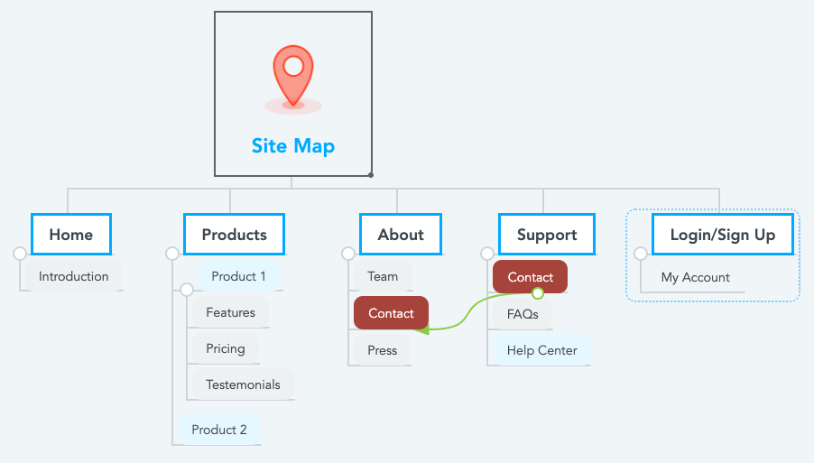

UD1 Eines de Fonaments d'Interfícies
1. Estructura
1.1 Evolució
Les interfícies web han tingut una marcada evolució des del naixement d'internet fins a l'actualitat. Com a curiositat pots consultar la primera pàgina web de la història ací i observar que pràcticament no tenia cap atractiu pel que fa al disseny visual.
-
Web 1.0 (Dècada de 1990): En aquesta primera etapa, les pàgines web eren bàsicament text i hipervincles. No hi havia molta consideració pel disseny i la funcionalitat era limitada. Les pàgines tenien colors bàsics i imatges simples.
-
Web 2.0 (Mitjans de la dècada de 2000): Aquesta etapa va veure un canvi significatiu en la forma en què les pàgines web eren dissenyades. Les pàgines web van començar a ser més interactives i dinàmiques amb l'ús de tecnologies com AJAX. Les paletes de colors es van ampliar, es van introduir fonts més variades i van aparèixer les primeres ombres i efectes d'animació.
-
Disseny Responsiu (Tard de la dècada de 2000 - Actualitat): Amb la popularització dels dispositius mòbils i les tauletes, va sorgir la necessitat d'adaptar les pàgines web a diferents mides de pantalla. Això va donar lloc al concepte de disseny web responsiu, on les pàgines poden adaptar-se fluidament a qualsevol pantalla, ja sigui un ordinador d'escriptori, una tauleta o un telèfon mòbil.
-
Minimalisme (Dècada de 2010 - Actualitat): El disseny minimalista es va fer popular amb l'èmfasi en la simplicitat i la claredat. Fonts sans-serif, molts espais en blanc i un ús limitat de colors es van convertir en tendència. Els botons i les icones sovint es van simplificar per a una millor experiència de l'usuari.
-
Disseny d'Aplicacions Web (Actualitat): Amb l'augment de les aplicacions web i la seva funcionalitat més avançada, el disseny d'interfícies web s'ha inspirat en gran mesura en el disseny d'aplicacions. Això inclou l'ús d'interfícies d'usuari més complexos i dinàmics, com ara panells de control, gràfics interactius i animacions més elaborades.
-
Disseny de Microinteraccions (Actualitat): Les microinteraccions són petits detalls d'interacció que fan que una pàgina web sigui més atractiva i útil. Aquestes poden incloure animacions quan l'usuari passa el ratolí per sobre d'un element o fa clic en un botó. Són importants per millorar l'experiència de l'usuari.
-
Disseny de Temes Fosc i Lluminós (Actualitat): Amb l'augment de les pantalles OLED i la preocupació per l'eficiència energètica, els dissenyadors han començat a oferir opcions de temes fosc i lluminós per a les pàgines web. Això permet als usuaris triar el tema que els sigui més còmode.
-
Disseny d'Accessibilitat (Actualitat): Hi ha un creixent enfocament en la inclusió i l'accessibilitat, assegurant que les pàgines web siguin utilitzables per a persones amb discapacitats. Això inclou l'ús de marcups semàntics, alts i altres pràctiques per millorar la compatibilitat amb lectors d' pantalla i altres ajudes.
-
Integració d'Intel·ligència Artificial (Actualitat): L'ús de la intel·ligència artificial i l'aprenentatge automàtic s'ha introduït en el disseny d'interfícies web per personalitzar la experiència de l'usuari i millorar la navegació.
En resum, el disseny d'interfícies web ha passat per diverses etapes d'evolució, des de les senzilles pàgines web 1.0 fins a les interfícies web responsives i d'aplicacions sofisticades d'avui dia. A mesura que la tecnologia i les preferències de l'usuari continuen canviant, és probable que el disseny web segueixi evolucionant en el futur.
1.2 Interacció persona-ordenador (IPO)
La Interacció Persona-Ordinador (IPO) en una interfície gràfica es el camp d'estudi que es centra en la comunicació i la interacció entre les persones i les computadores a través de la utilització d'interfícies gràfiques d'usuari (GUI, per les seves sigles en anglès, Graphical User Interface).
Les interfícies gràfiques són aquelles que permeten als usuaris interactuar amb un ordinador mitjançant elements visuals com finestres, icones, botons i altres elements gràfics en lloc de simplement utilitzar text o comandes.
Aquí tens alguns conceptes i aspectes importants relacionats amb la IPO en una interfície gràfica:
-
Usabilitat: La IPO se centra en crear interfícies gràfiques que siguin fàcils d'usar i que proporcionin una bona experiència a l'usuari. Això implica considerar factors com la facilitat de navegació, la claredat de la informació i la intuïtivitat de les accions de l'usuari.
-
Elements d'Interfície: Les interfícies gràfiques inclouen diversos elements, com ara finestres, caixes de diàleg, botons, camps de text, icones i més. El disseny i la disposició adequats d'aquests elements són crucials per a una interacció eficient.
-
Interacció Directa: En les interfícies gràfiques, els usuaris interactuen directament amb els elements visuals mitjançant dispositius d'entrada com el ratolí o la pantalla tàctil. Això permet una interacció més immediata i natural.
-
Retroalimentació Visual: Les interfícies gràfiques proporcionen retroalimentació visual als usuaris per indicar l'estat d'una acció o una operació. Per exemple, canvis de color en botons quan es passa el ratolí per sobre o es fa clic en ells.
-
Jerarquia Visual: Els elements visuals es disposen de manera que es comuniqui una jerarquia d'informació i funcions. Per exemple, els elements més importants o freqüentment utilitzats es destaquen més que els menys importants.
-
Disseny Responsiu: En l'era de múltiples dispositius, les interfícies gràfiques han de ser dissenyades per ser responsives, adaptant-se a diferents mides de pantalla i resolucions.
-
Accions de l'Usuari: L'usuari pot realitzar diverses accions en una interfície gràfica, com ara fer clic, fer arrossegaments, fer doble clic, escriure en camps de text, etc. La IPO es centra en com facilitar aquestes accions i assegurar-se que siguin intuïtives i eficients.
-
Accessibilitat: També és crucial garantir que les interfícies gràfiques siguin accessibles per a persones amb discapacitats mitjançant l'ús de marcups semàntics, opcions de text alternatives per a elements visuals, i altres pràctiques d'accessibilitat.
En resum, la Interacció Persona-Ordinador en una interfície gràfica implica dissenyar i optimitzar la forma en què les persones interactuen amb els ordinadors mitjançant elements visuals i com es comunica la informació. És una àrea fonamental en el desenvolupament de programari i el disseny d'aplicacions i llocs web per proporcionar una millor experiència d'usuari.
1.3 Elements d'una interfície web
Trobem elements de diferents tipus:
- Elements d'identificació: títol, logo, imatge de capçalera.
- Elements de navegació: Menú principal, ginys,
Asidede navegació, Menú de navegació del peu de pàgina ofooter. - Elements de continguts: text, imatges, multimedia.
- Elements d'interacció: botons, enllaços.
Un
breadcrumb(o "migas de pan" en castellà) en una interfaz web és una representació visual d'una estructura jeràrquica de pàgines web. Aquesta característica ajuda als usuaris a entendre la seva ubicació actual dins d'un lloc web i a navegar fàcilment cap enrere a les pàgines anteriors o cap amunt en la jerarquia del lloc.
Text Only Una landing page o pàgina d'aterratge és una pàgina dins d'un lloc web, desenvolupada amb l'objectiu de convertir als visitants en
leads(clients potencials que mostren interés a consumir un producte o servei, usualment deixant les seues dades personals de contacte). Generalment té un disseny molt senzill amb pocs enllaços, informació bàsica sobre l'empresa i un formulari que facilita la conversió.
1.4 Colors
La representació del color més habitual en html és utilitzant codi hexadecimal o representació RGB, tot i que existeixen altres representacions.
- Noms predefinits: HTML inclou una llista de noms de colors predefinits que pots utilitzar. Aquests noms de colors són fàcils d'entendre i utilitzar, i inclouen colors com "red" (vermell), "blue" (blau), "green" (verd), "yellow" (groc), entre d'altres. Per exemple:
| HTML | |
|---|---|
- HEXADECIMAL: Els codis de colors HEX utilitzen una combinació de sis dígits hexadecimals (0-9 i A-F) per representar un color. Els dos primers dígits representen la quantitat de vermell, els dos següents la quantitat de verd, i els dos últims la quantitat de blau.
| HTML | |
|---|---|
- RGB: Pots representar colors mitjançant codis de colors RGB (Red, Green, Blue). Aquesta notació utilitza tres valors numèrics per a cada canal de color (0-255) per especificar la quantitat de roig, verd i blau en un color.
| HTML | |
|---|---|
- RGBA: Els codis de colors RGBA són similars als codis RGB, però inclouen un quart valor que representa l'alfa (transparència) del color. L'alfa pot ser un valor decimal entre 0 (totalment transparent) i 1 (totalment opac).
| HTML | |
|---|---|
- Gradients CSS: També pots utilitzar gradients CSS per crear transicions de colors suaus en un element. Aquesta tècnica et permet especificar punts de color i direccions per crear efectes de gradient.
| HTML | |
|---|---|
Color Picker són eines d'utilitat per a provar la representació dels colors en els diferents codis. Ací pots fer proves amb el de la 3Wschool.
1.5 Components
En la següent figura podem vore els components principals d'una interfície web general.
Generalment una interfície web està composada per una capçalera, barra de navegació o navbar, cos principal, barra lateral o aside i peu de pàgina o footer.
2. Planificació i disseny
Les diferents fases del prototipat web són: esbós (sketch), esquema de pàgina (wireframe), maqueta (mockup) i prototip (prototype). En anglés es coneix a aquest procés com SWMP, tal com es pot veure en la següent figura.
2.1 Mapes
Un mapa conceptual és una representació gràfica en forma d'esquema de les idees principals extretes sobre la base d'un objecte d'estudi.
Aquest diagrama permet jerarquitzar la informació i establir les relacions que existeixen entre les diferents idees i conceptes extrets.
El mapa de navegació o sitemap mostra l'arquitectura de la pàgina web.

En aquest enllaç tens una llista de llocs per a generar mapes de navegació.
2.2 Esbós
Un "esbós" o "sketch" en el procés de disseny d'una interfície web és una representació visual molt simple i de baixa fidelitat d'una idea o concepte de disseny. Aquests esbossos es realitzen típicament a mà amb l'ús de llibretes, paper, bolígrafs o altres eines de dibuix i no tenen detalls elaborats com colors, fonts o elements visuals.
Els esbossos serveixen com a primer pas en la conceptualització i planificació d'una interfície web i tenen diverses finalitats importants:
-
Exploració d'Idees: Els dissenyadors utilitzen esbossos per brainstorming i explorar diverses opcions de disseny sense invertir temps en detalls intricats.
-
Captació Ràpida de Conceptes: Els esbossos permeten captar ràpidament la idea principal d'una interfície sense distraccions.
-
Prova de Concepte: Es poden mostrar esbossos als clients o als membres de l'equip per obtenir retroalimentació inicial i validar idees de disseny abans de continuar amb fases més avançades.
-
Iteració Ràpida: Com que es realitzen a mà i no requereixen eines digitals, els esbossos permeten canvis ràpids i iteracions en el disseny.
-
Comunicació d'Idees: Els esbossos serveixen per comunicar les intencions de disseny a altres membres de l'equip o clients de manera senzilla i comprensible.
-
Focus en l'Estructura i Disposició: Els esbossos es centren principalment en l'estructura i la disposició dels elements de la interfície, com la ubicació dels botons, els blocs de text, les àrees de contingut, etc.
-
Estalvi de Temps: Com que els esbossos es creen ràpidament, permeten als dissenyadors provar múltiples opcions sense passar moltes hores en cada una d'elles.
Un esbós pot ser tan simple com una sèrie de rectangles que indiquen on es trobaran els diferents elements en una pàgina web. A mesura que el disseny evoluciona i es refina, els esbossos es poden convertir en wireframes (esquemes) més detallats i posteriorment en mockups o prototips d'alta fidelitat.
2.3 Wireframe
Representa l'estructura jeràrquica de la pàgina. Pots utilitzar eines com aquesta.

2.4 Mockup
Un "mockup" en el procés de disseny d'una interfície web és una representació visual estàtica i detallada d'una pàgina web o una aplicació que mostra com serà l'aspecte i la disposició dels elements en la interfície final. Els mockups es creen utilitzant eines de disseny gràfic i solen ser molt més elaborats i específics que els esbossos. Aquests mockups són una etapa més avançada del procés de disseny i s'utilitzen per comunicar amb detall com serà la interfície abans de passar a la fase de desenvolupament.
Un exemple d'un mockup d'una pàgina web podria ser el següent:
Ací disposes d'una eina per a elaborar
mockups.
2.5 Prototip
El prototip és la representació més detallada de la web i disposa d'interactivitat per a comprovar el comportament i l'experiència d'usuari. És, per tant, un disseny al més alt detall i l'última fase de conceptualització abans de la implementació web.
Aquest article és un bon resum de les fases que hem estudiat.
Ací tens una eina per a desenvolupar prototips.
2.6 Guies d'estil
Les guies d'estils web són conjunts de regles i directrius que estableixen com es deuria dissenyar i desenvolupar un lloc web per a assegurar coherència, accessibilitat i facilitat d'ús. Hi ha diverses guies d'estils web reconegudes i populars, i les principals varien en funció de l'organització i les necessitats específiques. Algunes de les guies d'estils web més importants inclouen:
-
Guia d'Estil de Material Design: Desenvolupada per Google, aquesta guia d'estil ofereix directrius per a dissenyar aplicacions web i mòbils amb un aspecte i comportament coherents. Es centra en la simplicitat, la usabilitat i l'ús de components de disseny específics.
-
Guia d'Estil d'Apple Human Interface: Aquesta guia d'estil és específica per a les plataformes d'Apple, com iOS i macOS. Ofereix orientacions sobre la interfície d'usuari, icones, fonts i altres elements de disseny que s'han de seguir per proporcionar una experiència d'usuari coherent en els dispositius Apple.
-
Guia d'Estil de Bootstrap: Bootstrap és un framework de disseny web molt popular que inclou una guia d'estil pròpia. Proporciona una base consistent per a dissenyar llocs web i aplicacions amb un enfocament en la responsivitat i l'ús d'components reutilitzables.
-
Guia d'Estil d'IBM Design Language: Aquesta guia d'estil està destinada a crear experiències de disseny coherents per als productes i serveis d'IBM. Inclou directrius per a l'ús de colors, fonts, components i l'accessibilitat.
-
Guia d'Estil WCAG (Web Content Accessibility Guidelines): Aquesta guia d'estil està enfocada en assegurar que els llocs web siguin accessibles per a tothom, incloent-hi persones amb discapacitats. Proporciona directrius específiques per garantir la conformitat amb les normatives d'accessibilitat web.
-
Guia d'Estil Nielsen Norman Group: L'empresa Nielsen Norman Group és una autoritat en usabilitat i proporciona directrius de disseny web basades en les seves investigacions. Aquesta guia ofereix consells i recomanacions per millorar la usabilitat i l'experiència de l'usuari.
-
Guia d'Estil d'Adobe XD: Aquesta guia ofereix recursos per a dissenyadors que utilitzen Adobe XD, una eina de disseny i prototipatge d'interfícies d'usuari. Inclou plantilles, fonts i components per agilitzar el procés de disseny.
-
Guia d'Estil de Wikimedia Foundation: Aquesta guia d'estil està destinada a la creació de contingut per als projectes de Wikimedia, com la Viquipèdia. Ofereix directrius sobre com formatar i estructurar el contingut de manera coherent.
-
Guia d'Estil de la BBC: La British Broadcasting Corporation (BBC) té una guia d'estil que abasta el disseny web, el contingut i les eines de desenvolupament per a les seves plataformes en línia. És coneguda per les seves directrius específiques sobre accessibilitat.
Cada guia d'estil té les seves pròpies regles i recomanacions específiques que poden adaptar-se a les necessitats i la identitat de l'organització. L'elecció d'una guia d'estil i la seva implementació depenen dels objectius del projecte i de les preferències de l'equip de desenvolupament i disseny.
Si vols aprofundir pots consultar la guia Material Design ací.
3. Desenvolupament de la interfície web
3.1 Llenguatges
Per a la creació d'interfícies web, es fan servir diversos llenguatges i tecnologies. Aquí tens una llista dels llenguatges i tecnologies més comuns utilitzats en el desenvolupament d'interfícies web:
-
HTML (Hypertext Markup Language): És el llenguatge principal utilitzat per definir l'estructura i el contingut d'una pàgina web. HTML es fa servir per crear text, imatges, enllaços, taules, formularis i altres elements que es mostren en una pàgina web.
-
CSS (Cascading Style Sheets): CSS es fa servir per definir l'estil i la presentació d'una pàgina web. Permet especificar coses com els colors, fonts, marges, espaiat, fondos i altres aspectes visuals d'una pàgina web. També és utilitzat per a fer que una pàgina sigui responsiva i s'adapti a diferents dispositius i resolucions.
-
JavaScript: JavaScript és un llenguatge de programació que es fa servir per afegir interactivitat i comportament dinàmic a una pàgina web. Amb JavaScript, es poden crear funcions, validar formularis, realitzar animacions, carregar contingut dinàmic i comunicar-se amb servidors per a dades en temps real.
-
jQuery: jQuery és una biblioteca JavaScript que simplifica la manipulació del DOM (Document Object Model) i l'execució de tasques comunes en desenvolupament web, com l'acció en resposta a esdeveniments de l'usuari.
-
TypeScript: TypeScript és una extensió de JavaScript que afegeix tipatge estàtic opcional i altres funcionalitats a la llengua. És utilitzat per millorar la mantinguda i la gestió de codi JavaScript en projectes grans.
-
React: React és una llibreria JavaScript desenvolupada per Facebook que es fa servir per crear interfícies d'usuari d'alta qualitat i components reutilitzables. És especialment popular per a desenvolupament d'aplicacions d'una sola pàgina (SPA).
-
Angular: Angular és un framework de JavaScript mantingut per Google que ofereix un enfocament complet per al desenvolupament d'aplicacions web. Proporciona eines per a la gestió d'estat, enrutament i una gran quantitat de funcionalitats.
-
Vue.js: Vue.js és un framework JavaScript progressiu que es fa servir per crear interfícies d'usuari modulars i reactives. És conegut per la seva simplicitat i flexibilitat.
-
Sass i Less: Sass i Less són pre-processadors CSS que ofereixen característiques addicionals com variables, mixins i funcions per a simplificar i millorar la gestió dels estils CSS.
-
WebAssembly (Wasm): WebAssembly és un format binari que permet executar codi de màquina de baix nivell en navegadors web, obrint la porta a aplicacions web altament rendibles i de gran rendiment.
Aquests són alguns dels llenguatges i tecnologies més utilitzats per a la creació d'interfícies web. El desenvolupament web actual sovint implica una combinació d'aquests llenguatges i eines per crear experiències web interactives i atractives.
3.2 Frameworks CSS
Els frameworks de CSS són conjunts de regles, estils predefinits i components reutilitzables que faciliten el disseny i la creació de llocs web de manera més eficient. A continuació, es mostren alguns dels principals frameworks de CSS que són populars en el desenvolupament web:
-
Bootstrap: Bootstrap és un dels frameworks de CSS més populars i ampliament utilitzats. Desenvolupat per Twitter, ofereix una col·lecció completa de components, com botons, barres de navegació, caixes de diàleg, formularis i molt més. Bootstrap també té una xarxa de mòbils totalment responsiva i una gran comunitat de desenvolupadors que ofereixen suport i recursos addicionals.
-
Foundation: Foundation és un framework CSS altament personalitzable que ofereix una àmplia gamma de components i utilitats per a la creació de llocs web i aplicacions. És conegut per la seva flexibilitat i la seva capacitat per adaptar-se a diferents tipus de projectes.
-
Bulma: Bulma és un framework CSS minimalista que ofereix una estructura lleugera i fàcil de personalitzar per als teus projectes web. Es basa en un sistema de graella flexible i utilitza classes senzilles per a estil i disposició.
-
Materialize CSS: Basat en el disseny de Material Design de Google, Materialize CSS proporciona una col·lecció de components i estils basats en la filosofia de disseny de Material Design. És una opció popular per a crear aplicacions web i llocs amb un aspecte modern i atractiu.
-
Tailwind CSS: Tailwind CSS és un framework CSS diferent, ja que es centra en proporcionar classes utilitàries per aplicar estils directament al codi HTML. Això permet una gran flexibilitat i personalització, ja que pots crear dissenys i estils de manera molt específica mitjançant classes.
-
Semantic UI: Semantic UI es basa en una sintaxi semàntica que fa que sigui més fàcil de llegir i comprendre el codi HTML. Ofereix una col·lecció de components amb noms semàntics i estils moderns.
-
Ant Design: Ant Design és un framework CSS i d'UI popular desenvolupat per Alibaba. Està dissenyat específicament per a aplicacions empresarials i ofereix una gran varietat de components i recursos per a la creació d'interfícies d'usuari.
-
UIKit: UIKit és un framework CSS creat per YOOtheme i està especialment orientat a la creació de llocs web amb Joomla i WordPress. Ofereix un conjunt de components estilitzats i un sistema de graella flexible.
-
Pure CSS: Pure CSS és un framework CSS extremadament petit i lleuger creat per Yahoo. Està dissenyat per proporcionar estils bàsics i components comuns sense afegir massa pes a la pàgina.
-
Tailwind CSS: Tailwind CSS és un framework CSS que es centra en utilitzar classes utilitàries per a la creació de dissenys. És altament personalitzable i permet als desenvolupadors crear estils i dissenys ràpidament mitjançant l'ús de classes CSS directament al codi HTML.
La elecció del framework de CSS dependrà de les necessitats del projecte, el nivell d'expertesa del desenvolupador i els objectius de disseny. Cada framework té les seves pròpies característiques i avantatges, i pot ser útil explorar-los i provar-los per veure quin millor s'ajusta al teu projecte.
El framework que utilitzarem durant el curs serà
Bootstrap, donat que és el més popular i el més utilitzat.
3.3 Editors
Un editor WYSIWYG (de l'anglés What You See Is What You Get, que significa "el que es veu és el que s'obté") és un tipus d'editor HTML que permet modificar la pàgina web en una vista simplificada sense codi similar al disseny de pàgina real.
Un exemple d'editor online d'aquest tipus, on pots editar a la vegada
html,cssijavascriptés aquest
3.4 HTML5 semàntica
HTML5 va introduir una sèrie d'etiquetes específiques destinades a descriure millor el tipus de contingut que conté una pàgina web, cosa que fa que el codi sigui més significatiu per als navegadors i per a altres desenvolupadors.
Alguns dels elements semàntics més importants i comuns a HTML5 inclouen:
<header>: Utilitzat per a la capçalera d'una pàgina o secció. Conté elements com el logotip, el títol de la pàgina, la barra de navegació i altres informacions d'introducció.
<nav>: Utilitzat per a definir una secció de navegació o un menú principal. Conté enllaços a altres pàgines o seccions del lloc.
<article>: Utilitzat per a encapsular un contingut independent i autònom dins d'una pàgina web, com ara una entrada de blog o una notícia.
<section>: Utilitzat per a agrupar contingut relacionat dins d'una pàgina. Ajuda a definir divisions lògiques d'una pàgina web.
<aside>: Utilitzat per a contingut secundari o informatiu que és relacionat amb el contingut principal, però no és essencial per a la comprensió d'aquest.
<main>: Defineix el contingut principal d'una pàgina web. Normalment hi ha només un element <main> per pàgina.
<footer>: Utilitzat per a la peça de peu d'una pàgina, que pot contenir informació com drets d'autor, enllaços a pàgines relacionades i altres elements similars.
<figure> i <figcaption>: Utilitzats per a incloure imatges, gràfics o altres continguts multimèdia, juntament amb una llegenda descriptiva.
<time>: Utilitzat per a representar dates i hores de manera semàntica. Pot ser útil per als motors de cerca i per a la interpretació de dades temporals.
L'ús adequat d'aquests elements semàntics ajuda els motors de cerca a comprendre millor el contingut d'una pàgina i millora l'accessibilitat per als usuaris amb lectores de pantalla i altres tecnologies d'assistència. També facilita la comprensió del codi per part d'altres desenvolupadors i ajuda a mantenir un codi HTML net i estructurat.
HTML5semàntic promou les millors pràctiques de disseny i desenvolupament web per a crear pàgines web més riques i accessibles.
4. Eines de programari
4.1 Entorns de desenvolupament
Hi ha diversos entorns de desenvolupament (IDEs, per les seves sigles en anglès) que són populars entre els desenvolupadors web. La elecció de l'entorn depèn de les preferències personals i de les necessitats del projecte.
-
Visual Studio Code (VS Code): És un IDE lleuger i altament personalitzable creat per Microsoft. És extremadament popular en el desenvolupament web gràcies a la seva gran comunitat i a les nombroses extensions disponibles que ofereixen suport per a diferents llenguatges i frameworks web.
-
Sublime Text: Aquest és un editor de text ràpid i altament personalitzable amb una gran base d'usuaris en el desenvolupament web. Ofereix ressaltat de sintaxi per a molts llenguatges i moltes extensions.
-
Atom: Desenvolupat per GitHub, Atom és un editor de text gratuït i de codi obert. Té una comunitat activa i és conegut pel seu ecosistema de paquets que permeten afegir funcionalitats addicionals.
-
WebStorm: Aquest IDE està especialment dissenyat per al desenvolupament web i està orientat a JavaScript, HTML i CSS. És una elecció popular per als desenvolupadors que utilitzen JavaScript o els frameworks associats com Angular o React.
-
Eclipse: Eclipse és un IDE que s'utilitza àmpliament en el desenvolupament Java, però també es pot configurar per al desenvolupament web mitjançant la instal·lació d'extensions com Eclipse IDE for Java EE Developers.
-
PHPStorm: Aquest IDE està destinat específicament al desenvolupament de PHP i aplicacions web relacionades amb PHP. Ofereix eines avançades per a la depuració i el desenvolupament PHP.
-
Brackets: És un editor de text de codi obert creat per Adobe, dissenyat específicament per a desenvolupadors web. Té una interfície neta i ofereix funcionalitats específiques per a HTML, CSS i JavaScript.
-
NetBeans: Aquest és un IDE de codi obert que és àmpliament utilitzat per al desenvolupament de Java, però també ofereix suport per al desenvolupament web mitjançant plugins.
-
Komodo IDE: És una opció versàtil que ofereix suport per a diversos llenguatges de programació, inclosos els utilitzats en el desenvolupament web com JavaScript, Python, Ruby i altres.
-
Notepad++: Aquest és un editor de text lleuger i gratuït per a Windows que és popular entre els desenvolupadors web per la seva simplicitat i rendiment.
La elecció de l'entorn de desenvolupament depèn de factors com el llenguatge de programació que utilitzis, la teva experiència personal i les preferències. Molts desenvolupadors web utilitzen múltiples IDEs segons les necessitats del projecte.
Durant aquest curs utilitzarem el
Visual Studio Codepreferiblement sobre un Sistema Operatiu de tipusLinux.
Ací tens un tutorial de com instal·lar el Visual Studio Code en Ubuntu 22.04.
4.2 Git
Git és un sistema de control de versions ampliament utilitzat per al seguiment de canvis en el codi font i la col·laboració en desenvolupament de programari. Aquí tens una llista de comandaments bàsics de Git:
git init: Crea un nou repositori Git buit a la carpeta actual.
git clone [URL]: Clona un repositori Git existent des d'una URL remota a la carpeta local.
git add [fitxers]: Afegeix canvis o fitxers nous a l'àrea d'etiquetatge (staging area) per a la preparació de la comanda de commit.
git commit -m "[missatge]": Realitza un commit amb els canvis de l'àrea d'etiquetatge i associa un missatge descriptiu que expliqui els canvis realitzats.
git status: Mostra l'estat actual del repositori, incloent els canvis pendents d'etiquetar i els canvis sense seguiment.
git log: Mostra un històric de commits del repositori, incloent els autors, dates i missatges de commit.
git branch: Llista totes les branques del repositori i destaca la branca actual.
git checkout [branca]: Canvia a una branca diferent (existent o nova) o a un commit específic.
git merge [branca]: Fusiona els canvis d'una branca específica a la branca actual.
git pull: Actualitza la branca actual amb els canvis més recents del repositori remot.
git push: Pusheja els canvis de la branca actual al repositori remot.
git remote -v: Mostra una llista de tots els repositoris remots configurats.
git fetch: Descarrega canvis des de l'origen, però no els fusiona automàticament amb la branca actual.
git reset [fitxers]: Desfà els canvis d'etiquetatge (staging area) i els fitxers modificats al seu estat anterior al darrer commit.
git rm [fitxer]: Elimina un fitxer del repositori i registra el canvi.
git diff: Mostra les diferències entre l'àrea de treball i l'últim commit.
git remote add [nom] [URL]: Afegeix un repositori remot amb un nom i una URL associats.
Aquests són els comandaments bàsics de Git que t'ajudaran a gestionar un repositori. Hi ha molts altres comandaments i opcions disponibles que et permeten realitzar tasques més avançades i específiques en Git. Pots utilitzar git --help o git [comandament] --help per obtenir informació detallada sobre qualsevol comandament específic.
En els apunts del mòdul disposes d'un tutorial més extens de
git